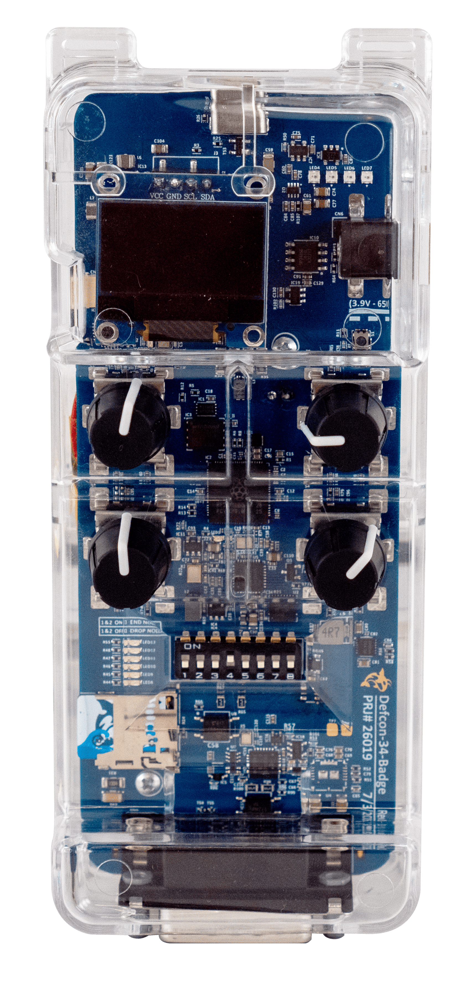
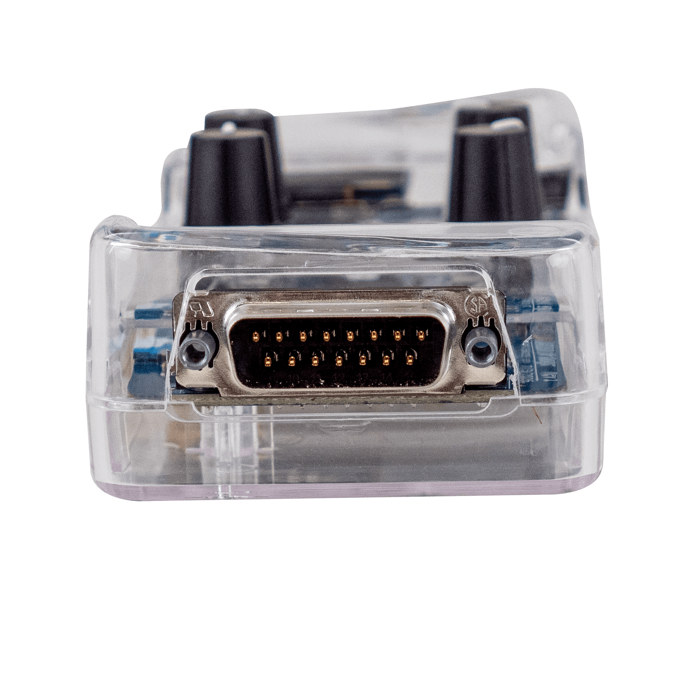
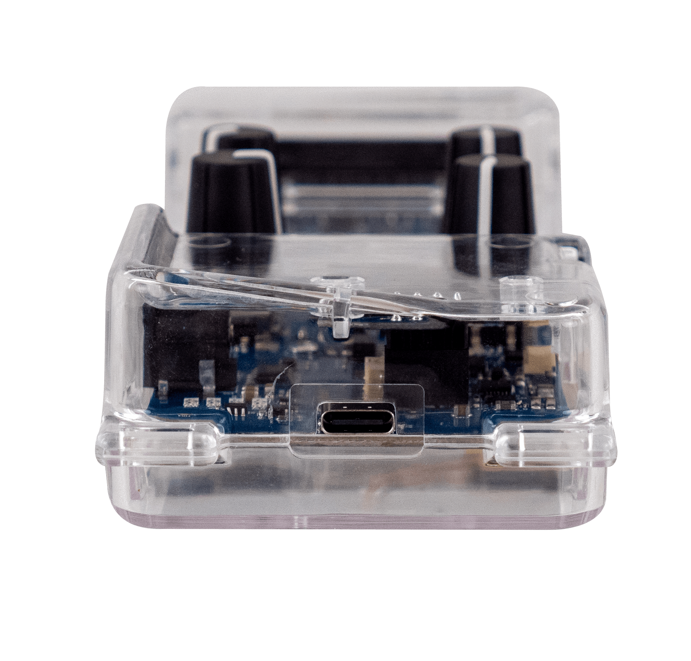

ICS Village DEF CON 34 Badge
The DEF CON 34 ICS Village Badge is a field instrument engineered for Operational Technology (OT), Industrial Control Systems (ICS), and automotive security researchers. It focuses on robust, multi-protocol hardware interfacing and delivers direct, low-level physical access to the critical communication lines driving modern automation, substations, and heavy machinery.
This badge consolidates the sort of hardware that normally lives on separate bench tools into a single portable platform. It is designed for auditing legacy systems, modern automotive networks, and industrial links without carrying a pile of breakout boards, adapters, and resistor packs.



Key hardware
- Main CPU
- Raspberry Pi RP2350B-A4
- RS485
- Modbus RTU capable, for PLC, RTU, and SCADA sniffing or tapping
- CAN / CANFD
- Direct access for automotive networks and factory-floor systems
- 10BASE-T1S
- Short-reach single-pair Ethernet with onboard physical termination switch
- 10BASE-T1L
- Long-reach single-pair Ethernet for industrial links
- Storage / UI
- SD card slot, I2C OLED screen, 4x rotary encoders, 4x programmable RGB LEDs
- Enclosure
- Clear custom-molded case for field use
Key software
- Firmware
- Runs FreeWili Porpoise Purpose Firmware
- API support
- Compatible with FreeWili OneWili API for Rust, C/C++, Python, rThon, and WASM
- USB interface
- Serial terminal USB interface
Power subsystem
- USB-C input
- 5V standard bench and desktop power
- Internal battery
- 3.7V / 1000mA for untethered field auditing
To replicate the capabilities of this single badge on a standard electronics workbench, a security analyst would normally spend hundreds of dollars on separate equipment. This design consolidates single-pair Ethernet, physical bus termination, CAN, CAN FD, and RS485 into one compact board.
DB15 pinout
| Pin | Signal |
|---|---|
| 1 | T1S P |
| 2 | T1S N |
| 3 | T1L P |
| 4 | RS485 P |
| 5 | - |
| 6 | CAN P |
| 7 | - |
| 8 | GND |
| 9 | T1S P |
| 10 | T1S N |
| 11 | T1L N |
| 12 | RS485 N |
| 13 | MISC DIO |
| 14 | CAN N |
| 15 | N/C |